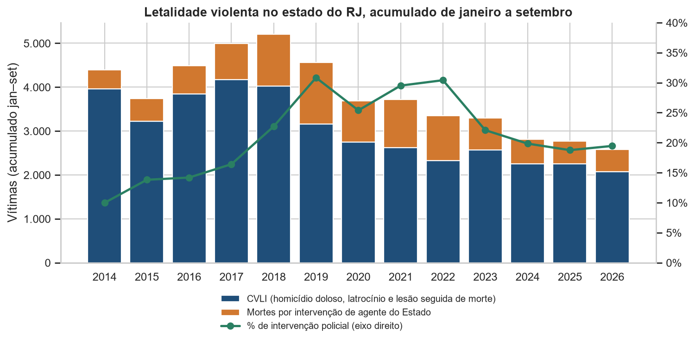
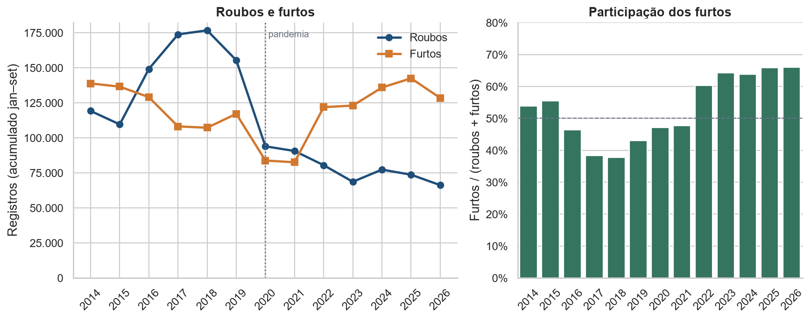
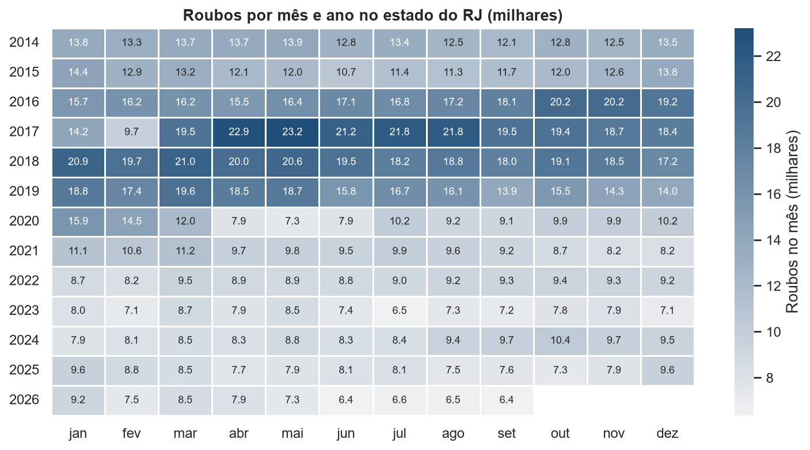
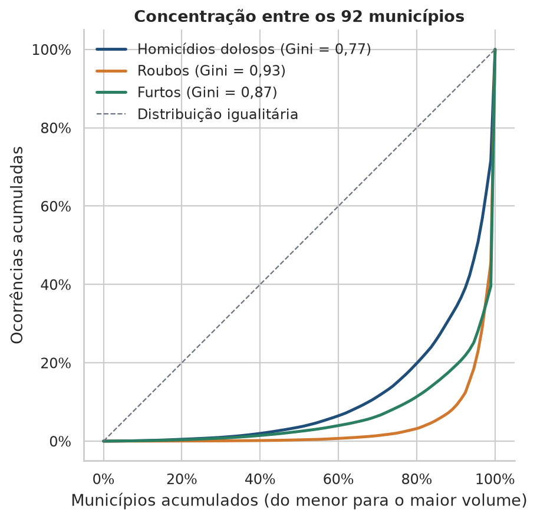
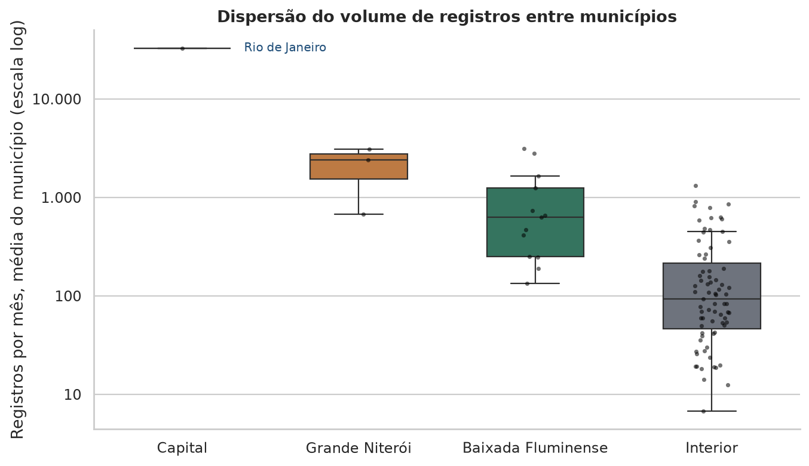

Resumo
Este trabalho analisa a série histórica mensal de estatísticas de segurança dos 92 municípios do estado do Rio de Janeiro, divulgada pelo Instituto de Segurança Pública (ISP-RJ), de janeiro de 2014 a setembro de 2026 (14.076 observações município-mês). Um pipeline em Python, determinístico e não destrutivo, validou a base, preservou a ausência estrutural das séries de feminicídio, sinalizou divergências de classificação entre roubos e furtos e harmonizou a definição de letalidade violenta, alterada em outubro de 2024. Comparando janeiro a setembro de cada ano, a letalidade violenta harmonizada caiu 41,4% entre 2014 e 2026, mas a participação das mortes por intervenção de agente do Estado subiu de 10,0% para um pico de 30,8% em 2019. Os roubos recuaram 60,5% do pico de 2018 até 2023, enquanto os furtos voltaram a crescer e passaram a representar 66,0% dos registros patrimoniais em 2026. A criminalidade é muito concentrada: cinco municípios reúnem 53,7% dos homicídios dolosos e 81,5% dos roubos, e o perfil das ocorrências difere entre as regiões. Por trabalhar com contagens absolutas, sem normalização populacional, os resultados descrevem o volume de registros policiais, e não o risco individual. Código, dados tratados e dicionário de variáveis seguem os princípios FAIR.
Palavras-chave: segurança pública; Rio de Janeiro; letalidade violenta; crimes patrimoniais; ciência aberta (FAIR).
Abstract
This study analyzes the monthly series of public security statistics for the 92 municipalities of the state of Rio de Janeiro, Brazil, published by the state Public Security Institute (ISP-RJ), from January 2014 to September 2026 (14.076 municipality-month observations). A deterministic, non-destructive Python pipeline validated the data, kept the structural absence of the femicide series as missing values, flagged robbery/theft classification mismatches, and harmonized the definition of violent lethality, which changed in October 2024. Comparing January to September of each year, harmonized violent lethality fell 41,4% between 2014 and 2026, yet the share of deaths caused by state agents rose from 10,0% to a peak of 30,8% in 2019. Robberies dropped 60,5% from the 2018 peak to 2023, while thefts grew again and reached 66,0% of property-crime records in 2026. Crime is highly concentrated: five municipalities account for 53,7% of intentional homicides and 81,5% of robberies, and the offense profile differs across regions. Because the analysis uses absolute counts without population adjustment, results describe the volume of police records rather than individual risk. Code, processed data, and data dictionary follow the FAIR principles.
Keywords: public security; Rio de Janeiro; violent lethality; property crime; open science (FAIR).
1. Introdução
A segurança pública é um dos temas de maior peso na agenda social brasileira, e o estado do Rio de Janeiro reúne características que tornam seus dados particularmente instrutivos: uma metrópole de grande porte, uma região metropolitana densa e dezenas de municípios do interior com realidades distintas. O Instituto de Segurança Pública (ISP-RJ) divulga, por meio do portal ISPDados, séries mensais por município que permitem examinar como a violência letal e os crimes patrimoniais evoluíram ao longo de mais de uma década (ISP-RJ, 2026).
Duas questões tornam a leitura desses números menos óbvia do que parece. A primeira é que a letalidade violenta reúne mortes de natureza distinta, como os homicídios e as mortes causadas por intervenção de agentes do Estado, que podem seguir trajetórias diferentes. A segunda é que reduções em um tipo de crime podem coexistir com aumentos em outro, o que sugere deslocamento do perfil de ocorrências, e não necessariamente melhoria geral. Este estudo trata ambas com uma abordagem reprodutível, aderente aos princípios FAIR (WILKINSON et al., 2016): tudo o que aparece aqui pode ser refeito a partir do repositório.
O trabalho responde a três perguntas de pesquisa:
- RQ1. Como evoluiu a letalidade violenta no estado entre 2014 e 2026, e qual a participação das mortes por intervenção de agente do Estado nela?
- RQ2. Roubos e furtos seguiram trajetórias diferentes e como reagiram à pandemia de 2020?
- RQ3. Quão concentrada geograficamente é a criminalidade e o perfil das ocorrências difere entre as regiões do estado?
2. Metodologia e pipeline de dados
2.1 Fonte e granularidade
Os dados vêm do arquivo BaseMunicipioMensal.csv, obtido no portal ISPDados do ISP-RJ
(https://www.ispdados.rj.gov.br/). A unidade de observação é o par município × mês: 92
municípios, de janeiro de 2014 a setembro de 2026, totalizando 14.076 linhas e 62 variáveis, entre elas
homicídios, roubos, furtos, apreensões e prisões. Os três últimos meses (jul a set de 2026) estão marcados pela fonte
como dados ainda em consolidação (fase = 2) e podem ser revisados. O significado de cada variável está em
data/data_dictionary.md. Os valores são contagens absolutas, sem normalização por população.
2.2 Tratamento dos dados
O pipeline (src/etl.py) é determinístico e não destrutivo: lê o arquivo bruto (separador ;,
codificação Latin-1), valida o esquema e a chave (município, ano, mês), converte tipos e grava Parquet e CSV comprimido.
Nenhuma linha é descartada e nenhum valor original é sobrescrito; cada decisão fica registrada em
data/processed/etl_log.json, junto do SHA-256 do arquivo bruto. A validação encontrou quatro
particularidades, tratadas como a Tabela 1 resume.
| Achado | Decisão |
|---|---|
| Feminicídio e tentativa de feminicídio só existem a partir de out/2024 (11.868 valores ausentes). | Mantidos como ausentes (NA), pois a série não existia. Imputar zero criaria 129 meses de "nenhum caso". |
A letalidade_violenta passa a somar o feminicídio em out/2024 (verificado em 100% das linhas). |
Criada a letalidade_harmonizada (CVLI + mortes por intervenção de agente do Estado), comparável em toda a série. |
| Totais de roubos (708 linhas) e de furtos (738) diferem da soma dos componentes, quase sempre em 2014–2018 e de forma espelhada. | Totais oficiais mantidos; criadas colunas recalculadas e flags. A seção 3.2 testa a sensibilidade. |
| Dados de jul a set/2026 são preliminares. | Mantidos e sinalizados (dado_preliminar). |
O trecho a seguir resume o núcleo do tratamento (versão completa em src/etl.py):
def tratar(df):
out = df.copy()
out["data"] = pd.to_datetime(out["mes_ano"].str.replace("m", "-") + "-01")
out["regiao"] = pd.Categorical(out["regiao"], categories=ORDEM_REGIOES)
for col in COLUNAS_CONTAGEM: # Int32 anulável: preserva o NA do feminicídio
out[col] = out[col].astype("Int32")
out["dado_preliminar"] = out["fase"].eq(2)
out["total_roubos_recalc"] = out[COMPONENTES_ROUBOS].sum(axis=1).astype("Int32")
out["inconsist_total_roubos"] = out["total_roubos"] != out["total_roubos_recalc"]
out["letalidade_harmonizada"] = out["cvli"] + out["hom_por_interv_policial"]
return out # nenhuma linha removida, nenhum valor original sobrescrito2.3 Métodos de análise
Comparabilidade temporal. Como 2026 cobre apenas janeiro a setembro, os comparativos anuais usam sempre o acumulado de janeiro a setembro de cada ano, evitando comparar um ano parcial com anos completos:
def acumulado_ate_mes(df: pd.DataFrame, ate_mes: int, colunas: list[str]) -> pd.DataFrame:
"""Soma estadual por ano considerando só os meses 1..ate_mes.
Permite comparar 2026 (ano parcial) com os demais anos em base homogênea.
"""
return df[df["mes"] <= ate_mes].groupby("ano")[colunas].sum().astype("int64")Associação. A correlação de Spearman (SPEARMAN, 1904), apropriada para contagens assimétricas, mede se duas séries mensais variam juntas. Concentração. A distribuição entre municípios é descrita pela participação dos maiores e pelo coeficiente de Gini, calculado como abaixo e ilustrado pela curva de Lorenz (LORENZ, 1905):
def gini(valores) -> float:
"""Coeficiente de Gini (0 = distribuição igual; 1 = concentração total)."""
v = np.sort(np.asarray(valores, dtype=float))
n = v.size
if n == 0 or v.sum() == 0:
return float("nan")
idx = np.arange(1, n + 1)
return float(2 * np.sum(idx * v) / (n * v.sum()) - (n + 1) / n)Valores atípicos. Municípios atípicos são identificados pelo critério do intervalo interquartil (IQR) sobre o volume mensal médio de registros. Sensibilidade. Repetimos as comparações com os totais recalculados para medir quanto as divergências de classificação poderiam alterar as conclusões. A análise usa pandas (MCKINNEY, 2010), NumPy (HARRIS et al., 2020), SciPy (VIRTANEN et al., 2020), Matplotlib (HUNTER, 2007), seaborn (WASKOM, 2021) e Plotly (PLOTLY TECHNOLOGIES INC., 2015).
3. Resultados e discussão
3.1 RQ1: letalidade violenta e intervenção de agentes do Estado
No acumulado de janeiro a setembro, a letalidade violenta harmonizada passou de 4.396 vítimas em 2014 para 2.576 em 2026, queda de 41,4%, com pico em 2018 (5.210). O CVLI, isolado, recuou 47,6% (3.958 para 2.075). As mortes por intervenção de agente do Estado, porém, foram de 438 para 501, e por isso sua participação na letalidade foi de 10,0% em 2014 para um pico de 30,8% em 2019, recuando para 19,4% em 2026 (Figuras 1 e 2).

Em 2020 as mortes por intervenção caíram 33,5% (1.407 para 935). O ano coincide com a liminar da ADPF 635, concedida em 5 de junho de 2020, que restringiu operações policiais em favelas do Rio de Janeiro durante a pandemia (BRASIL, 2020). A coincidência temporal é compatível com um efeito dessa decisão, mas os dados aqui analisados não permitem atribuir causalidade: não há controle de operações, de mobilidade nem de outros fatores simultâneos. A correlação mensal de Spearman entre CVLI e intervenções é fraca (ρ = 0,19; p = 0,016), ou seja, as duas séries não se movem juntas, o que reforça a pertinência de analisá-las separadamente.
Desde outubro de 2024 a base registra feminicídios: foram 207 casos até set/2026. Como a série não existe antes disso, o uso da letalidade harmonizada evita atribuir à queda do período uma mudança que é apenas de definição.
3.2 RQ2: roubos, furtos e a pandemia
Os roubos atingiram o pico anual em 2018 (231.606 registros) e o menor valor em 2023 (91.398), queda de 60,5%. Na comparação de janeiro a setembro, a redução entre 2014 e 2026 é de 44,4%. Os furtos tiveram variação de apenas 7,5% (queda) no mesmo comparativo, mas a trajetória é reveladora: recuaram entre 2014 e 2018, caíram de novo em 2020–2021, no auge da pandemia, e voltaram a crescer a partir de 2022 (Figuras 3 e 4). Com isso, a participação dos furtos no total de crimes patrimoniais (roubos + furtos) foi de 53,8% em 2014, mínima de 37,8% em 2018 e 66,0% em 2026: o perfil migrou do roubo para o furto.

O efeito da pandemia aparece de forma abrupta: em abril de 2020 houve 7.893 roubos, apenas 48% da média mensal de 2019 (16.610). Os roubos não voltaram aos patamares anteriores, enquanto os furtos se recuperaram, o que é compatível com a hipótese de que o isolamento reduziu a exposição à abordagem em via pública. Essa explicação, porém, não foi testada neste estudo. A correlação mensal entre roubos e furtos é fraca e negativa (ρ = -0,21; p = 0,011), e portanto os dois crimes não oscilam em conjunto.

Valor atípico temporal. O mapa de calor (Figura 5) destaca fevereiro de 2017 com apenas 9,7 mil roubos, ante 14,2 mil em janeiro e 19,5 mil em março. Furtos e total de registros caem juntos, em cerca de metade do mês seguinte, e a queda se concentra na capital. O padrão, simultâneo em todas as categorias, sugere falha de registro ou de coleta, e não queda real, mas a base não permite confirmar a causa; o ponto foi mantido e é tratado como limitação.
Sensibilidade. Usar a soma dos componentes em vez dos totais oficiais altera os totais anuais em no máximo 2,3% (roubos) e 2,0% (furtos). Pico, vale e a migração de roubo para furto permanecem, de modo que as conclusões não dependem da escolha.
3.3 RQ3: concentração geográfica e perfil regional
A criminalidade é muito concentrada. Os cinco maiores municípios reúnem 53,7% dos homicídios dolosos, 74,8% dos furtos e 81,5% dos roubos, com coeficientes de Gini de 0,77, 0,87 e 0,93, respectivamente (Figura 6). Como a distribuição é muito assimétrica (a mediana municipal é de 128 registros por mês e 48% das observações têm zero homicídio), a análise usa participações e razões, e não médias simples entre municípios.

O padrão muda conforme o tipo de crime. A capital responde por 54,5% dos roubos e por 28,3% dos homicídios; já o Interior, com 75 municípios, concentra 31,0% dos homicídios, mas só 6,2% dos roubos, e a Baixada Fluminense, 31,9% dos homicídios com 18,9% do total de registros (Figuras 7 e 8). A razão entre roubos e homicídios, que não depende do tamanho da população por ser um quociente de duas contagens do mesmo local, ilustra a diferença de perfil: 74 roubos por homicídio na Capital, 51 em Grande Niterói, 33 na Baixada e 7,6 no Interior. Em termos de política pública, isso sugere que a violência letal e a criminalidade patrimonial exigem leituras territoriais distintas.

Pelo critério do IQR (limite de 1.057 registros mensais; Figura 9), há 8 municípios atípicos: Belford Roxo, Campos dos Goytacazes, Duque de Caxias, Niterói, Nova Iguaçu, Rio de Janeiro, São Gonçalo, São João de Meriti. É preciso cautela com a leitura: municípios maiores registram mais ocorrências por terem mais habitantes, e as comparações aqui descrevem volume, e não risco.
4. Conclusão
Entre 2014 e 2026, a letalidade violenta harmonizada no estado do Rio de Janeiro caiu 41,4% (janeiro a setembro), mas a participação das mortes por intervenção de agentes do Estado chegou a 30,8% em 2019, o que mostra que o total esconde trajetórias distintas. Os roubos caíram 60,5% do pico até 2023, ao passo que os furtos voltaram a crescer e hoje respondem por cerca de dois terços dos registros patrimoniais. A criminalidade é fortemente concentrada em poucos municípios, e o perfil das ocorrências varia entre as regiões.
Limitações. (i) Os números são absolutos, sem taxa por 100 mil habitantes, o que limita comparações entre municípios; (ii) 2026 é parcial e seus três últimos meses são preliminares; (iii) a definição de letalidade violenta mudou em out/2024; (iv) há reclassificações entre roubo e furto em 2014–2018; (v) fevereiro de 2017 apresenta possível falha de registro; (vi) a base mede registros policiais, que dependem também da disposição de a população registrar a ocorrência; (vii) as interpretações sobre pandemia e ADPF 635 são hipóteses compatíveis com os dados, não efeitos estimados.
Trabalhos futuros. Normalizar os indicadores por população (Censo e estimativas do IBGE), modelar as séries com sazonalidade e quebras estruturais, incluir dados sobre operações policiais e mobilidade para testar as hipóteses levantadas e estender a análise a outros estados.
5. Disponibilidade dos dados e declaração FAIR
Este trabalho segue os princípios FAIR (WILKINSON et al., 2016). Todo o material está em https://github.com/BianoSorriso/seguranca-publica-rj-isp.
| Princípio | Como é atendido |
|---|---|
| Findable | README.md com resumo, palavras-chave e link da fonte original; autoria, disciplina, semestre e instituição no cabeçalho; metadados estruturados (JSON-LD) nesta página. |
| Accessible | Repositório público; ingestão sem credenciais; artigo publicado no GitHub Pages (pasta docs/), com layout responsivo. |
| Interoperable | data/data_dictionary.md descreve as 62 variáveis originais e 8 derivadas; dados tratados em Parquet e CSV comprimido (.csv.gz). |
| Reusable | Código sob licença MIT; dados derivados e texto sob CC BY 4.0; requirements.txt com versões fixadas; ETL com registro de decisões e SHA-256 do bruto. |
Para reproduzir integralmente o pipeline e esta página:
git clone https://github.com/BianoSorriso/seguranca-publica-rj-isp.git
cd seguranca-publica-rj-isp
python -m venv .venv
source .venv/bin/activate # no Windows: .venv\Scripts\activate
pip install -r requirements.txt
python -m src.etl # gera data/processed/*
python -m src.gerar_dicionario # regenera data/data_dictionary.md
python -m src.build_artigo # regenera docs/index.html e as figuras
jupyter nbconvert --to notebook --execute --inplace notebooks/analise_exploratoria.ipynb6. Referências
- BRASIL. Supremo Tribunal Federal. Arguição de Descumprimento de Preceito Fundamental n. 635 (ADPF 635). Relator: Min. Edson Fachin. Medida cautelar incidental concedida em 5 jun. 2020 e referendada pelo Plenário em ago. 2020. Brasília: STF, 2020.
- HARRIS, C. R. et al. Array programming with NumPy. Nature, v. 585, p. 357–362, 2020. DOI: 10.1038/s41586-020-2649-2.
- HUNTER, J. D. Matplotlib: a 2D graphics environment. Computing in Science & Engineering, v. 9, n. 3, p. 90–95, 2007.
- INSTITUTO DE SEGURANÇA PÚBLICA DO ESTADO DO RIO DE JANEIRO (ISP-RJ). ISPDados: estatísticas de segurança, série histórica mensal por município desde 2014 (BaseMunicipioMensal.csv). Rio de Janeiro: ISP-RJ, 2026. Disponível em: https://www.ispdados.rj.gov.br/. Acesso em: nov. 2026.
- LORENZ, M. O. Methods of measuring the concentration of wealth. Publications of the American Statistical Association, v. 9, n. 70, p. 209–219, 1905.
- McKINNEY, W. Data structures for statistical computing in Python. In: PYTHON IN SCIENCE CONFERENCE, 9., 2010, Austin. Proceedings [...]. Austin: SciPy, 2010. p. 56–61.
- PLOTLY TECHNOLOGIES INC. Collaborative data science. Montreal: Plotly Technologies Inc., 2015. Disponível em: https://plot.ly.
- SPEARMAN, C. The proof and measurement of association between two things. The American Journal of Psychology, v. 15, n. 1, p. 72–101, 1904.
- VIRTANEN, P. et al. SciPy 1.0: fundamental algorithms for scientific computing in Python. Nature Methods, v. 17, p. 261–272, 2020. DOI: 10.1038/s41592-019-0686-2.
- WASKOM, M. L. seaborn: statistical data visualization. Journal of Open Source Software, v. 6, n. 60, 3021, 2021. DOI: 10.21105/joss.03021.
- WILKINSON, M. D. et al. The FAIR Guiding Principles for scientific data management and stewardship. Scientific Data, v. 3, 160018, 2016. DOI: 10.1038/sdata.2016.18.